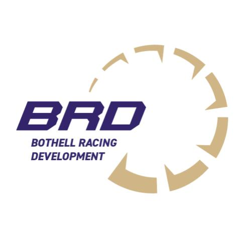
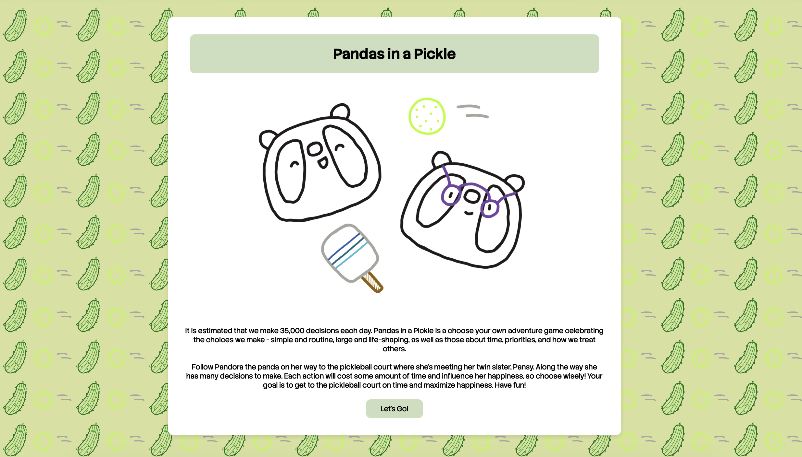
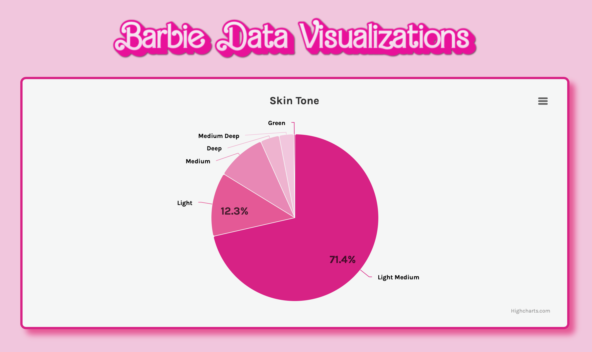
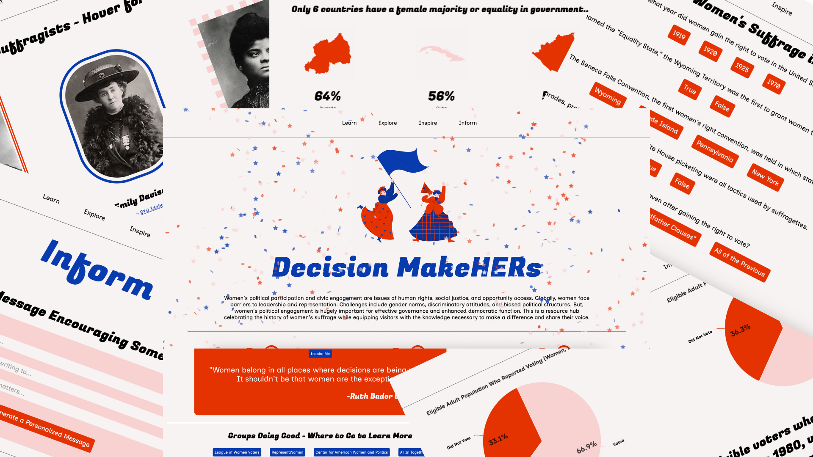
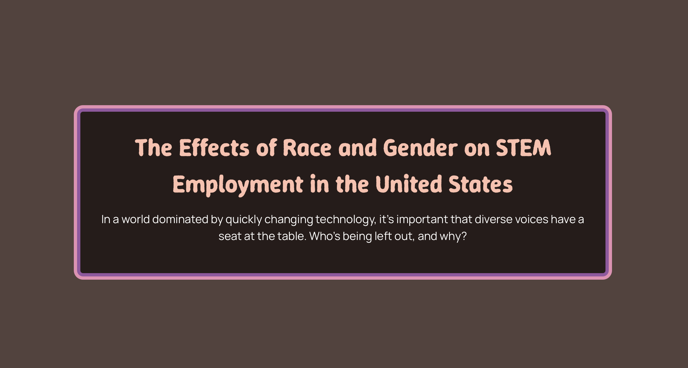
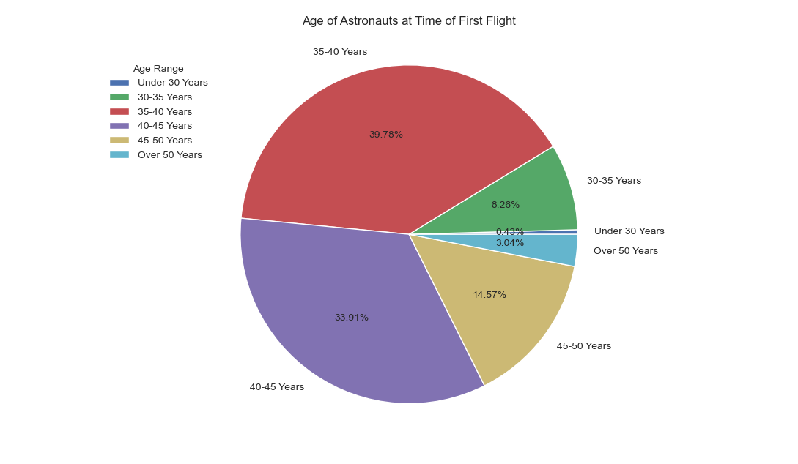
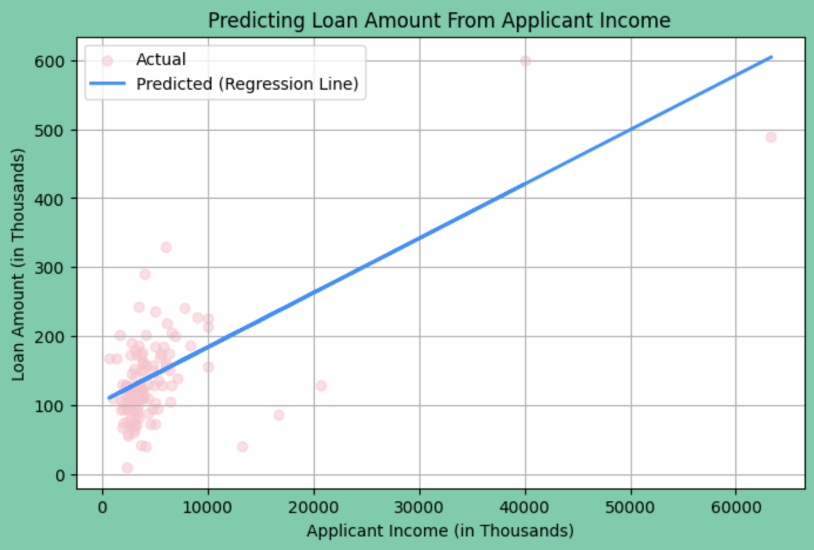
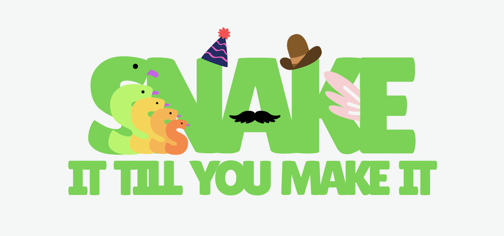

Coding
I love to code. Over the years I've gained skills in web development, game development, app development, cybersecurity, cryptography, data science, and AI. I've completed over 20 weeks of Girls Who Code summer programs and was a member of my high school's GWC chapter for three years and co-president with my sister for two years. In 2023, my sister and I won GWC's Spring Challenge, Humanize AI, with our website on the ethics of facial recognition technology and AI. Beyond GWC, I've completed Kode With Klossy's mobile app development program where I learned to make iOS apps in Swift and SwiftUI. I've since participated in KWK's alumni programs where I've studied advanced web development and data storytelling, applied data science, and machine learning alongside industry partners. In high school I coded a competition robot and I now work on software for my college's University Rover Challenge team. Besides deepening my own coding skills, I love to teach others how to code and have taught middle schoolers Python at a robotics summer camp for multiple years now.
Programs:
- Girls Who Code Summer Immersion Program 2021
- Girls Who Code Self-Paced Program 2022
- Girls Who Code Self-Paced Program 2023
- Girls Who Code Self-Paced Program 2024
- Kode With Klossy Mobile App Development Program 2023
- Kode With Klossy x Black Wealth Data Center Data Storytelling Alumni Program 2025
- Kode With Klossy x Infosys Foundation USA Applied Data Science Alumni Program 2025
- Kode With Klossy x Goldman Sachs Machine Learning x Finance Alumni Program 2025
Hackathons and Game Jams:
- UWB Hacks: Save the World! 2025
- CS Girlies AI vs. HI Hackathon 2025
- NASA International Space Apps Challenge 2025
- Husky Game Dev's Fall Game Jam 2025
- STEMpower Hacks 2025

UWB Hacks: Save the World! 2025

Girls Who Code Club 2024

Girls Who Code at the Club Fair 2023

Girls Who Code Club 2023

Girls Who Code Club Fair Board 2022
Featured Projects
Adan for President
Created a responsive and accessible student government campaign website that shares campaign goals and tracks when voting opens/closes via a JavaScript countdown timer.
Check Out the Project: adanpres2025.netlify.app
HTML
CSS
JavaScript

Shorecrest VEX Robotics Club 99621 Website
Developed a multipage informational website for the Shorecrest High School VEX Robotics Competition teams. The website details different aspects of the VEX Robotics Competition, team history and achievements, information about the annual competition and summer camp the team hosts, and ways to donate or volunteer your time to the program.
Check Out the Project: shorelineroboticssociety.org/sc-vex
HTML
CSS
JavaScript

Facing Bias: The Ethics of Facial Recognition Through AI
Winning submission for Girls Who Code's Humanize AI Challenge. Built an extensive website detailing the biases and intricacies of facial recognition technology and the AI industry. Interviewed my community about the effects of AI on them and presented their stories in an engaging way.
HTML
CSS
JavaScript

Coral Comeback
Built an iOS app using Swift, SwiftUI, and Xcode surrounding coral reef decline that consists of informational pages, a personalized message generator, a countdown timer, and a quiz.
Swift
SwiftUI

Bothell Racing Development
Designed and built a website for Bothell Racing Development, a University of Washington Bothell club making a formula-style race car to compete in the Formula SAE engineering competition. Collaborated with club members to clearly present club information and resources to students and sponsors.
Check Out the Project: uwbrd.netlify.app
HTML
CSS
JavaScript

Pandas in a Pickle
It's estimated we make 35,000 decisions each day. Pandas in a Pickle is a vanilla HTML, CSS, and JavaScript choose your own adventure game celebrating the choices we make daily. The game follows Pandora the panda's journey to the pickleball court, where she's meeting her twin sister Pansy. Along the way Pandora faces many decisions. She has to choose her actions wisely since each will cost her some amount of time and influence her happiness. Third place overall submission for Husky Game Dev's Fall 2025 Game Jam.
Check Out the Project: abbyhoyt.github.io/Pandas-in-a-Pickle/
HTML
CSS
JavaScript

Barbie Data Visualizations
Visualized Barbie character demographic data for practice implementing the Highcharts charting library.
Check Out the Project: charlottehoyt.github.io/Barbie-Data-Visualization
HTML
CSS
JavaScript
Highcharts
Python

Decision MakeHERs
An interactive and accessible multi-page resource hub encouraging women's leadership, political participation, and civic engagement while celebrating the history of women's suffrage. Submission for STEMpower Hacks 2025.
Check Out the Project: abbyhoyt.github.io/STEMpower-Hacks/index.html
HTML
CSS
JavaScript
Highcharts

The Effects of Race and Gender on STEM Employment in the United States
Developed a scrollytelling website using the Svelte JavaScript framework that explores data surrounding race, gender, and STEM employment in the US.
HTML
CSS
JavaScript
Svelte

Space for Everyone
Collected, cleaned, visualized, and analyzed data from the Space Devs LaunchLibrary API v2.3.0 using Python (Requests, pandas, Matplotlib) to explore the demographics of astronauts. Proposed solutions to increase diversity in space based on my findings. Put together a professional slide deck and video presentation to showcase my work.
Python

Home Loan Approval According to Demographics and Financial Standing
A finance and machine learning project researching how various factors influence home loan approval. Completed an exploratory data analysis, cleaned data, and engineered new features based on an existing dataset. Built and evaluated a collection of linear regression and regression tree models to learn how demographics and financial standing affect the likelihood of an individual getting a home loan approved. Presented findings via an extensive Jupyter Notebook and presentation.
Python

Sssssnake It Till You Make It
Made a game using C# and Unity that allows users to interact with various snake characters and the environment. Submission for the CS Girlies AI vs. HI hackathon.
C#
Unity

Bee a Hero: Save the Hive, Save the World!
Collaborated to make an informational website with an embedded game in HTML, CSS, and JavaScript that raises awareness of the decline in bee populations. Submission for the UWB Hacks: Save the World! hackathon.
HTML
CSS
JavaScript
Sustainable City Planning With NASA Earth Observation Data
A website helping urban planners make data-driven decisions in the face of climate change. This project promotes sustainable development and responsible decision making, allowing users to interact with a map, place pins, and gain climate insights. Built using SQL, Python, HTML, and CSS. Submission for the NASA International Space Apps Challenge 2025 Data Pathways to Healthy Cities and Human Settlements track.
HTML
CSS
Python
SQL
Girls in Tech Activist Toolkit
Built a responsive and accessible “activist toolkit” website that explores the need for women and girls in technology. Presented statistics, research findings, and additional resources in an engaging and approachable way. Included interactive features such as a fun fact button and personalized message generator.
HTML
CSS
JavaScript
Empowering Data: Women's Wellness
A data visualization project that explores the decrease in girls' education in Madagascar over time using Python (pandas, Matplotlib, etc.) and a women's wellness dataset.
Python
Coral Reef Decline Activist Toolkit
Extensively researched the causes of coral reef decline and presented findings, solutions, and resources via a visually compelling 12-page website. Used JavaScript to add features like scroll indicators, typewriter text visuals, quick fact buttons, and a customized email message generator.
HTML
CSS
JavaScript